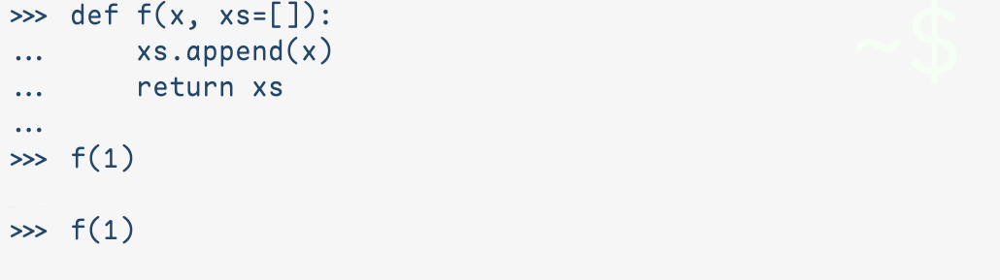
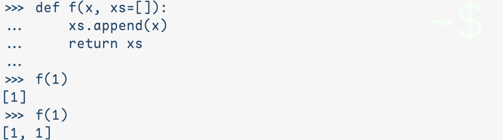

随堂测试 (?)
在 Pytho IDLE 中定义采取了默认参数的函数 f，两次调用 f(1) 结果是否一样呢？点击 ⟩ 查看答案.


对同一个函数，相同的输入，得到了不同的输出，说明这不是一个纯函数. 其中的原因是 Python 为 xs 初始化了一段值为[]的全局内存，后续每一次以缺省 xs 调用 f，函数体中的 append 都在修改这段内存. 除了有意的反直觉设计，其他设计，一般总得符合某种直觉，那么这个设计的直觉是什么呢？
函数，但是对象
如果我们对这个函数本来就没有“纯”的预期，而是把它视作带有初始状态xs=[]，并且可以通过f(x)来修改此状态的对象，那一切就合理了.